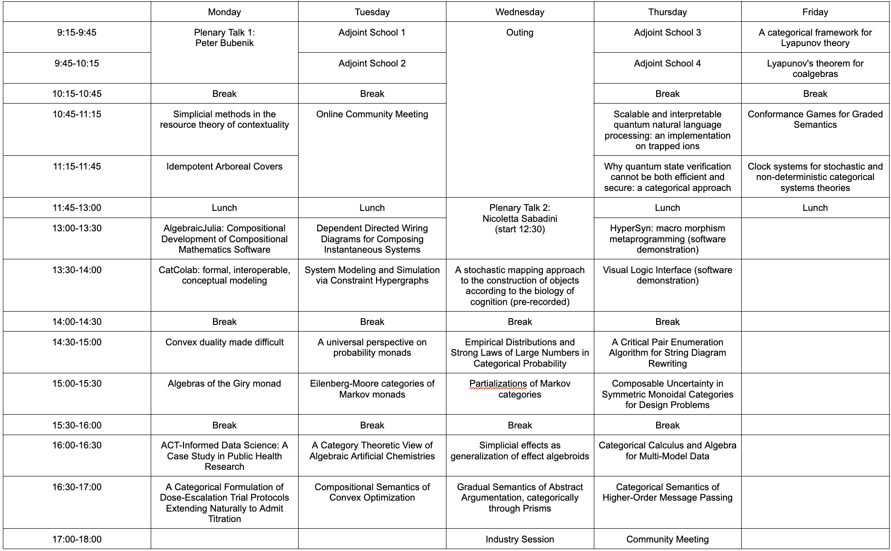

8th International Conference on Applied Category Theory
About
The 8th International Conference on Applied Category Theory (ACT) will take place together at the University of Florida on June 2-6, 2025. The conferences will be preceded by the Adjoint School on May 26-30, 2025.
For more information on the ACT series, see here.
Registration is now open!
The call for participation (CFP) has been posted
Important dates
All deadlines are AoE (Anywhere on Earth).
- February 26: Title and brief abstract submission
- March 3: Paper submission
- April 7: Notification of authors
- May 19: Registration deadline and Pre-proceedings ready versions
- June 2-6: Conference
Venue
The conference will be held at the UF Reitz Union in the Career Connection Center
J. Wayne, Reitz Student Union, 686 Museum Rd Suite 1300, Gainesville, FL 32603
Conference Info
This year, lunch and coffee will be provided for attendees. This will understandably mean that there will now be registration fees. We are using a tiered system based on occupation category:
- Students $140
- Academics $300
- Industry professionals $700
Travel and registration assistance will be available to students depending on final registration numbers and funds available. Please follow this link for assistance applications.
Due to technological constraints, only the keynote addresses, and the community meeting will be accessible via Zoom. Recordings of presentations will be made available after the conference on a best-effort basis. For exceptional circumstances in which a presenter cannot attend in person, submissions may be published in conference proceedings alone, and/or a recorded presentation may be made available after the conference. If circumstances outside your control prohibit you from presenting your work in person, please contact conference organizers.
Adjoint School
More information about the adjoint school can be found at adjointschool.com.
LGBTQ+ Statement
The 2025 conference for Applied Category Theory will be held at the University of Florida in Gainesville, Florida. As organizers, we understand that the current political climate and legal policies of the state of Florida do not instill a sense of comfort and safety in individuals from marginalized communities, especially the LGBTQ+ community. However, the organizers, University, and local community are committed to creating a welcoming environment for all. Along with the ACT community, Gainesville, FL is a kind and welcoming place for individuals of all backgrounds and experiences. Organizers and attendees of ACT 2025 will not tolerate any abuse or discrimination, direct or indirect, against members of the LGBTQ+ community. This event will be an opportunity to learn from each other, build connections and collaborations, and discuss our research and pedagogy in applied category theory. We welcome all members of the ACT community to participate in this endeavor, regardless of gender, sexuality, race, religion, etc.
Inclusive Spaces Resources
Please refer to the UF Libraries page for finding inclusive spaces on campus. Here is a map of inclusive spaces on campus.
Organizers can confirm that most buildings on campus, including the one the conference activities take place in, have multiple accessible, single-occupancy restrooms. The available campus map also shows all locations of single-occupant restrooms, ADA accessible routes between buildings, bus stops, and more via the filter options in the top left corner of the map.
Organizers
- Program Chairs
- Local Chair
Scheduled Presentations

| Category | Author(s) | Title |
|---|---|---|
| Talk | Why quantum state verification cannot be both efficient and secure: a categorical approach | |
| Software Demo | Visual Logic Interface (software demonstration) | |
| Talk | System Modeling and Simulation via Constraint Hypergraphs | |
| Talk | Simplicial methods in the resource theory of contextuality | |
| Talk | Simplicial effects as generalization of effect algebroids | |
| Talk | Scalable and interpretable quantum natural language processing: an implementation on trapped ions | |
| Talk | Partializations of Markov categories | |
| Talk | Markov categories with random variables | |
| Talk | Lyapunov’s theorem for coalgebras | |
| Talk | Idempotent Arboreal Covers | |
| Software Demo | HyperSyn: macro morphism metaprogramming (software demonstration) | |
| Talk | Gradual Semantics of Abstract Argumentation, categorically through Prisms | |
| Talk | Empirical Distributions and Strong Laws of Large Numbers in Categorical Probability | |
| Talk | Eilenberg-Moore categories of Markov monads | |
| Proceedings | Dependent Directed Wiring Diagrams for Composing Instantaneous Systems | |
| Proceedings | Convex duality made difficult | |
| Talk | Conformance Games for Graded Semantics | |
| Talk | Compositional Semantics of Convex Optimization | |
| Proceedings | Composable Uncertainty in Symmetric Monoidal Categories for Design Problems | |
| Talk | Clock systems for stochastic and non-deterministic categorical systems theories | |
| Proceedings | Categorical Semantics of Higher-Order Message Passing | |
| Proceedings | Categorical Calculus and Algebra for Multi-Model Data | |
| Software Demo | CatColab: formal, interoperable, conceptual modeling | |
| Talk | Algebras of the Giry monad | |
| Software Demo | AlgebraicJulia: Compositional Development of Compositional Mathematics Software | |
| Talk | ACT-Informed Data Science: A Case Study in Public Health Research | |
| Talk | A universal perspective on probability monads | |
| Talk | A stochastic mapping approach to the construction of objects according to the biology of cognition | |
| Talk | A categorical framework for Lyapunov theory | |
| Proceedings | A Critical Pair Enumeration Algorithm for String Diagram Rewriting | |
| Proceedings | A Category Theoretic View of Algebraic Artificial Chemistries | |
| Talk | A Categorical Formulation of Dose-Escalation Trial Protocols Extending Naturally to Admit Titration |